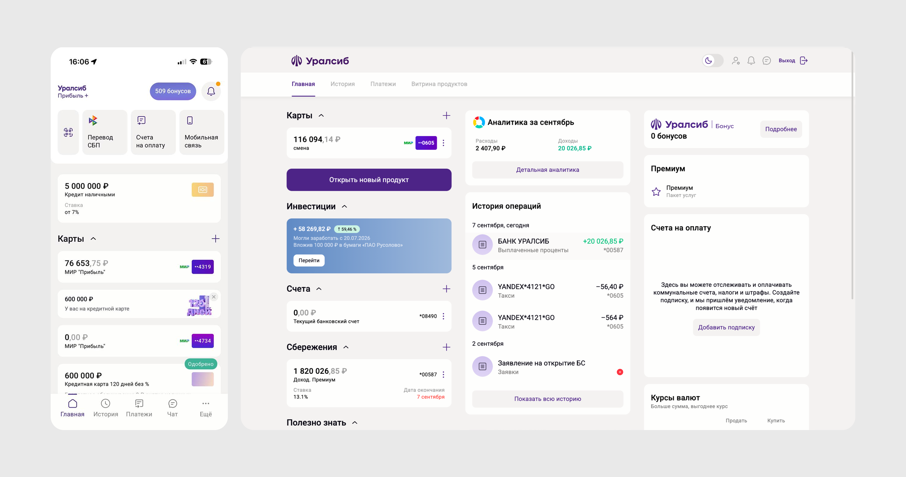
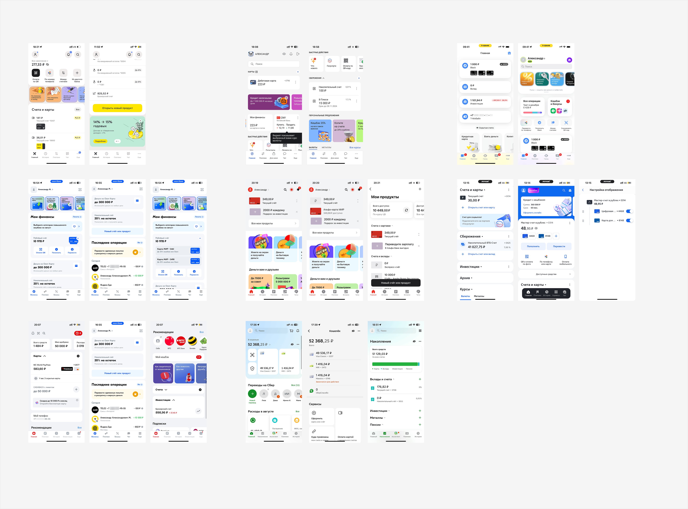
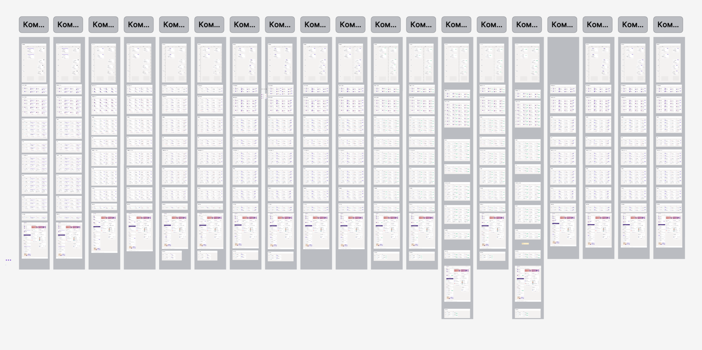
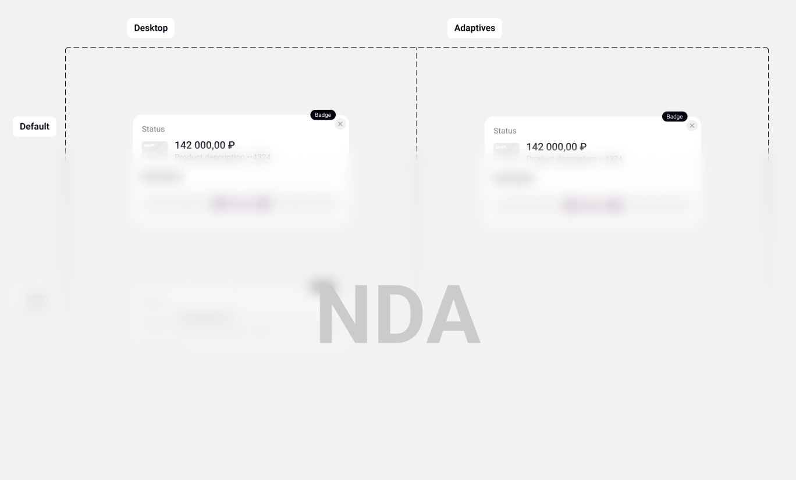
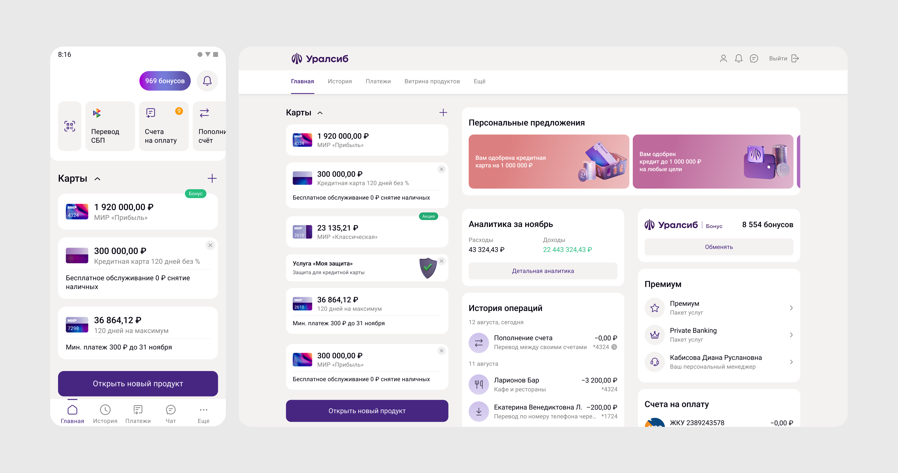

Карточка продукта для главного экрана
Карточка продукта на главном экране существовала в разных версиях на разных платформах, не было понимания, какие состояния продуктов она может отображать. В результате работы получился единый компонент, который покрывает все состояния всех продуктов и снимает расхождения между дизайном и кодом.
Обзор
Карточка продукта — самый частый элемент на главном экране банковского приложения: вклады, карты, кредиты и инвестиционные продукты. Со временем у разных команд появились свои версии карточки под свои продукты — со своей логикой состояний, своей версткой и расхождениями дизайна с кодом.
Задача была не «нарисовать красивее», а свести все решения в один компонент, который предсказуемо ведёт себя для любого продукта и на любой платформе.
Проблема
К моменту старта у карточки были:
Устаревший визуал — компонент не обновлялся вместе с остальным интерфейсом и визуально выбивался из актуального стиля приложения.
Отстутствие структуры — не было чёткого списка, какие состояния может принимать карточка для разных типов продуктов: открытый продукт, оффер,просрочки и так далее.
Дизайн расходился с кодом — то, что было в макетах, и то, что было в проде, со временем начало отличаться друг от друга.
Различия между платформами — iOS, Android и Web постепенно разошлись в деталях реализации одного и того же компонента.

Процесс
1) Сбор фактуры вместе с аналитиками всех продуктовых команд. Собрала полный список существующих состояний карточки для каждого типа продукта — вклады, карты, кредиты, инвестиции.
2) Сбор референсов, как похожую задачу решают на рынке — какие паттерны используют другие приложения для похожих продуктов.

3) Подготовка концепта: было предложено около 20 вариантов решений задачи с отображением статусов по каждому продукту

Решение
На основе собранной информации спроектировала компонент, который закрывает все необходимые состояния сразу. Решение проходило кроссревью с дизайнерами других команд перед тем, как начать оформление документации.
Отдельно решена проблема с офферами: добавлен крестик, который явно показывает, что перед пользователем предложение банка, а не уже открытый продукт.
К компоненту подготовлена документация — как он используется в макетах и как реализуется в коде, — чтобы дизайн и разработка не расходились снова.

Результат
Единый компонент закрывает все существующие кейсы использования и позволяет легко добавить новый продукт — не с нуля, а на основе готовой системы состояний.
У команды онлайн-банка появилось общее понимание того, как ведут себя продукты на главном экране, — вместо нескольких параллельных версий одной и той же карточки.
Жалоба клиентов на отстутствие различий в офферах и открытых продуктах закрыта: крестик-индикатор однозначно показывает что клиент видит оффер.
